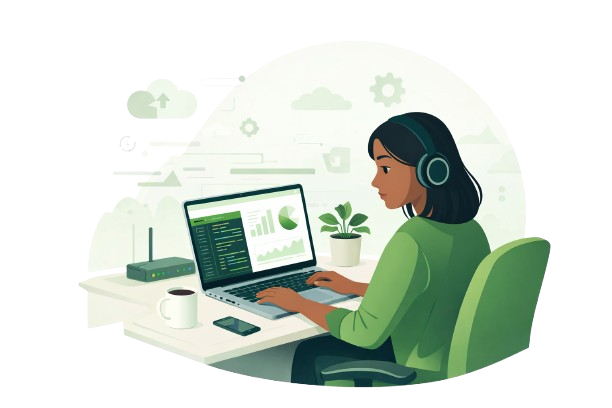
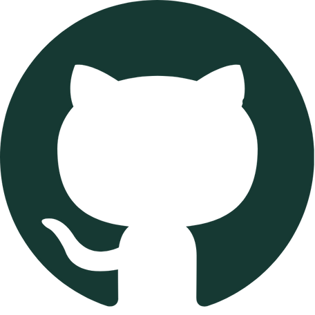

Impératif, fonctionnel et orienté objet
Python
C
C++
JavaScript
OCaml
Prolog
MIPS
Portfolio · Étudiante en informatique · Alternance 2026
Data, cloud, réseaux et développement logiciel
Étudiante en troisième année de licence informatique à l’Université Paris 8, je recherche une alternance pour la rentrée 2026 et je présente ici mon parcours, mes compétences et mes projets.
Mon profil, mes centres d’intérêt et mon parcours dans le numérique.

Étudiante en troisième année de licence informatique à l’Université Paris 8, je recherche une alternance pour la rentrée 2026 afin d’intégrer un master orienté Data, Cloud et Réseaux.
Mon parcours m’a permis de développer des compétences en programmation, algorithmique, bases de données, développement web et traitement de données. J’ai également travaillé sur des projets en machine learning, cybersécurité et développement logiciel, ce qui m’a permis d’avoir une vision plus large du numérique.
Au-delà de mes études, je suis membre d’un conseil local de jeunes, au sein duquel j’ai eu l’occasion de proposer, développer et porter plusieurs projets, notamment un projet de randonnée visant à encourager la découverte, le collectif et l’initiative chez les jeunes. En parallèle, je suis photographe freelance depuis maintenant deux ans. Cette activité me permet de développer ma créativité, mon sens du détail, mon autonomie ainsi que ma capacité à mener un projet de manière sérieuse et professionnelle.
Mon parcours
Université Paris 8 — Parcours orienté programmation, algorithmique, bases de données, intelligence artificielle, cybersécurité, systèmes et réseaux.
2022 – 2025Spécialités Mathématiques, Physique-Chimie et Numérique et Sciences Informatiques (NSI), obtenu avec mention.
2019 – 2022Contribution à un projet open source en C++/Qt : analyse de bugs, compréhension du code existant, corrections techniques et collaboration via GitHub.
Janvier 2026 – Mars 2026Conception d’une plateforme de suivi de performance pour joueurs de tennis, avec réflexion sur la structuration des données, l’analyse et la visualisation.
Depuis octobre 2025Un socle technique construit autour du développement, de la data et des environnements logiciels.
Python
C
C++
JavaScript
HTML
CSS
MySQL
SQLite
PyTorch, TensorFlow, Flask, Vue.js, React
Visual Studio Code, GitHub, GitLab, Jupyter Notebook
Linux, macOS
Architecture client-serveur, sockets TCP/IP, protocoles applicatifs, communication réseau en Python
Authentification, gestion de session, chiffrement AES-GCM et RSA, partage de secret de Shamir, validation des entrées
Gestion de processus légers avec threads, synchronisation via verrous, administration logique des connexions et ressources
Machine Learning, Deep Learning, traitement du langage naturel (NLP)
Quelques projets réalisés au cours de ma licence, en groupe comme en autonomie.
Développement d’un modèle de classification supervisée en Python pour prédire des cas d’anémie, avec prétraitement des données, expérimentation de modèles et évaluation des performances.
Réalisation d’un projet de cybersécurité en groupe avec implémentation du partage de secret de Shamir pour protéger et reconstruire une clé secrète de manière sécurisée.
Développement d’une application client-serveur en Python permettant la communication en temps réel entre plusieurs utilisateurs. Implémentation de sockets TCP/IP, gestion multi-thread, création de groupes de discussion et protocole de commandes personnalisé.
Réalisation d’une démo visuelle en C++ avec OpenGL (GL4Dummies), combinant animations temps réel, effets graphiques et synchronisation musicale. Projet inspiré de la demoscene avec optimisation des performances et gestion de scènes dynamiques.
Implémentation en C d’algorithmes de parcours et de plus courts chemins, avec analyse du comportement des algorithmes sur différents jeux de données.
Réalisation de projets en HTML, CSS, JavaScript et SQL, avec structuration d’interfaces, gestion de données et logique applicative côté web.
Je suis actuellement à la recherche d’une alternance pour la rentrée 2026. Vous pouvez me contacter pour échanger sur mon profil, mes projets et mes compétences.
